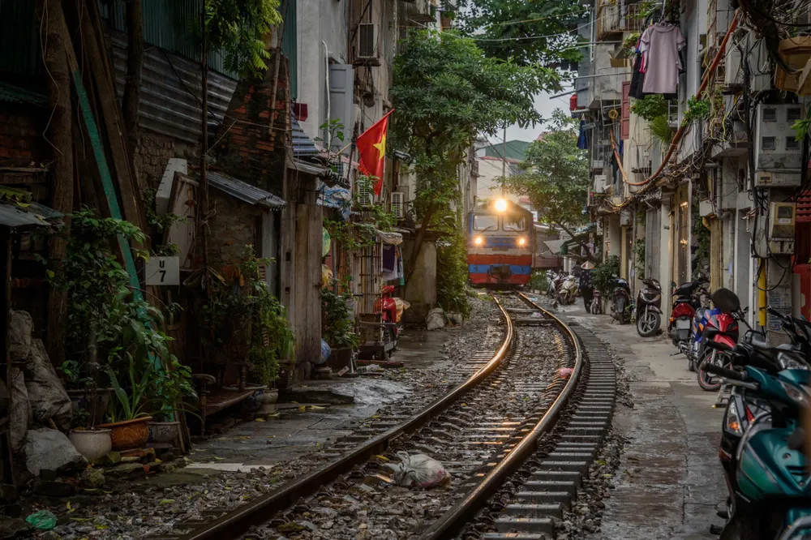

CHÍNH TRỊ
Thứ Năm, ngày 24/10/2024
Thời điểm chín muồi để xây dựng đường sắt tốc độ cao Bắc - Nam
Thứ năm, ngày 24/10/2024 10:35 GMT+7
VTV.vn - Ngành đường sắt cần được thay một “chiếc áo mới” để có thể đảm nhận vai trò vận tải hành khách trên các cự ly mà loại hình vận tải này có ưu thế.
Được “thai nghén” trong gần 20 năm qua, dự án đường sắt cao tốc Bắc - Nam được “đưa lên, đặt xuống” nhiều lần, cũng là dự án có tổng giá trị đầu tư lớn nhất, có quy mô lớn nhất và chưa từng có tiền lệ đầu tư tại Việt Nam. Câu hỏi được rất nhiều người quan tâm lúc này là: Liệu đã phải thời điểm chín muồi để triển khai dự án?
Đi lùi trên chính đường ray của mình
Dù đã từng mang đến niềm hân hoan, tự hào trong lịch sự, nhưng không thể phủ nhận cho đến nay, những chuyến tàu trên đường sắt truyền thống của Việt Nam đã quá lạc hậu so với thế giới. Tuổi đời lên tới hơn 100 năm.
Đường ray đơn 1m của đường sắt hiện tại đã tồn tại hơn 140 năm. Nếu tính những chiếc đầu máy toa xe mới nhất cũng đều có thời gian khai thác là 13 năm, thậm chí có thể lên tới 58 năm. Một số thiết bị đã được đại tu tới lần thứ ba và khó có thể mua lại vật tư, phụ tùng thay thế do nhà sản xuất không chế tạo nữa. Và khi chưa thể đổi mới, chúng vẫn phải tiếp tục hoạt động.
Năm 2022, vận chuyển đường sắt đạt 5,7 triệu tấn (gấp 2,5 lần năm 1990). Cùng thời gian này, sản lượng vận tải bằng đường bộ đã gấp khoảng 50 lần, đường biển thì gấp 26 lần về vận chuyển. Trong khi đó, nguồn lực cho đầu tư phát triển kết cấu hạ tầng đường sắt tới năm 2030 sẽ cần khoảng 240.000 tỷ đồng mà ngân sách bố trí tới năm 2025 mới được có hơn 14.000 tỷ đồng, chiếm 5,8% so với nhu cầu.

“Chiếc áo” đường sắt dù được nỗ lực vá víu thế nhưng không thể phù hợp với nhu cầu vận tải hiện nay. Suốt thời gian dài, vận tải đường sắt luôn lép về không cạnh tranh được với đường bộ, đường hàng không. Vận tải đường sắt đang dần mất đi thế chủ lực trong vận tải phục vụ phát triển kinh tế của đất nước.
Đến tận năm ngoái đường sắt mới có lãi sau nhiều năm lỗ liên tiếp, nhưng dường như chưa thể vội mừng khi thị phần của vận tải hành khách của đường sắt vẫn… “đứng đội sổ”. Theo thống kê, đường bộ chiếm gần 63%, hàng không chiếm hơn 34%, đường sắt chiếm gần 3% và đang có xu hướng giảm dần.
“Sự tiện nghi, tiện ích, thuận tiện để đi lại và vận chuyển hàng hoá cũng như tính kết nối của đường sắt hiện tại chưa cao. Sự linh hoạt của đường sắt so với các loại hình vận tải khác chưa thể đồng đều”, ông Đặng Sỹ Mạnh - Chủ tịch Hội đồng thành viên Tổng công ty Đường sắt Việt Nam lý giải sự thất thế của đường sắt so với các phương tiện vận tải khác. Theo ông Mạnh, để vận tải đường sắt có sự đột phá điều đầu tiên cần phải có sự thay đổi về về hạ tầng.
Có thể nói ngành đường sắt cần được thay một “chiếc áo mới” để có thể đảm nhận vai trò vận tải hành khách trên các cự ly mà loại hình vận tải này có ưu thế, thay vì phải luân chuyển, phân bổ bớt sang cho các loại hình vận tải khác.
Thị trường vận tải đang “méo mó”
Nhấn mạnh về sự cấp thiết cho việc xây dựng đường sắt tốc độ cao Bắc - Nam, Thứ trưởng Bộ Giao thông vận tải Nguyễn Danh Huy khẳng định, thị trường vận tải hành khách trong nước đang bị "méo mó".
Ông Huy cho biết, theo nghiên cứu trên thế giới, với khoảng cách 300 - 800km thì đường sắt đóng vai chủ đạo. Đối với vận tải hành khách, cự ly ngắn (dưới 150km) ưu thế thuộc về đường bộ; Cự ly trung bình (150 - 800km) đường sắt tốc độ cao chiếm hoàn toàn ưu thế; Cự ly dài (trên 800km) thị phần chủ yếu thuộc về hàng không và một phần của đường sắt tốc độ cao. "Hiện nay chúng ta đang "lấy dao mổ trâu để mổ ruồi" khi để hàng không bay những chặng dưới 500km", ông Huy nêu quan điểm.
Theo Thứ trưởng Bộ Giao thông vận tải, về lý thuyết, chi phí cất hạ cánh trải dài trên các dặm bay, do đó việc hàng không bay các chặng ngắn khiến khiến đẩy giá thành tăng cao. "Khi Bamboo Airways gặp khó khăn, trình lên Bộ Giao thông vận tải phương án tái cơ cấu thì hãng đã bỏ tất cả các chặng bay ngắn và chỉ giữ lại đường bay Hà Nội - TP Hồ Chí Minh", lãnh đạo Bộ Giao thông vận tải thông tin.
Hay như việc chạy những chuyến xe giường nằm từ Hà Nội đi Huế, theo ông Huy, là "lấy dao mổ ruồi để mổ trâu" bởi vận tải đường bộ không nên chạy những tuyến dài như thế vì tiềm ẩn rất nhiều nguy cơ an toàn giao thông, trừ dịch vụ du lịch.
Dự báo nhu cầu vận tải bằng đường sắt đến năm 2050 cần đảm nhận khoảng 18,2 triệu tấn hàng và khoảng 122,7 triệu lượt khách. Theo Bộ Giao thông vận tải, để giải quyết nhu cầu vận tải lớn về hành khách, việc lựa chọn đầu tư tuyến đường sắt tốc độ cao là thích hợp, hiệu quả.
“Kinh nghiệm thế giới cho thấy, với chiều dài tuyến lớn hơn 800km, tốc độ 350 km/h hấp dẫn và có khả năng thu hút lượng hành khách cao hơn so với các dải tốc độ thấp hơn. Chi phí đầu tư tốc độ 350 km/h cao hơn tốc độ 250 km/h khoảng 8 - 9%. Song, nếu đầu tư với tốc độ 250km/h, việc nâng cấp lên tốc độ 350km/h là khó khả thi và không hiệu quả”, Thứ trưởng Bộ Giao thông vận tải Nguyễn Danh Huy cho biết.
Nói thêm về tính cấp thiết của dự án đường sắt tốc độ cao Bắc - Nam, GS.TS Hoàng Văn Cường, Uỷ viên Uỷ ban Tài chính - Ngân sách của Quốc hội cho biết dự án dự kiến đi qua 20 tỉnh thành. Tại đây chủ yếu tập trung các trọng điểm kinh tế với ước tính 63% khu kinh tế, 40% khu công nghiệp.
Nhu cầu vận tải hiện là rất lớn song cơ cấu vận tải lại đang bất hợp lý khi đường sắt đang “lép vế” so với hàng không và đường bộ.
“Hàng không chúng ta có, đường bộ cao tốc có, đường biển có nhưng riêng đường sắt với địa hình trải dài nhưng hiện không đáp ứng được nhu cầu. Nếu đường sắt tốc độ cao Bắc - Nam hoàn thành, chúng ta sẽ đồng bộ hóa hạ tầng khung về giao thông. Từ đó tái cấu trúc được cơ cấu vận tải”, ông Hoàng Văn Cường nói.
Theo ông Cường, đường sắt tốc độ cao Bắc - Nam sẽ tạo ra một thời kỳ mới để những người dân dọc theo trục Bắc - Nam vốn không có cơ hội tiếp cận phương tiện hàng không vẫn có thể di chuyển đến các vùng miền với tốc độ rất nhanh.
“Vấn đề khoảng cách, địa lý sẽ không còn là rào cản đối với người dân”, ông Cường cho biết.
Khi nút thắt vận tải được giải quyết, sẽ thu hút được các nhà đầu tư đến các trọng điểm kinh tế, tạo ra sự phân bố lại lực lượng sản xuất, phân bố lại khu kinh tế, không chỉ tập trung ở một số trọng điểm như hiện nay nữa. Từ đó sẽ phân bố lại dân cư, ở mỗi ga đường sắt sẽ là một tụ điểm phát triển - hình thành các trung tâm đô thị gắn với ga đường sắt.
Theo báo VTV.VN
Tin đọc nhiều
Phó Thủ tướng: Phấn đấu năm 2024, CPI bình quân không vượt quá 4%
NSND Xuân Bắc được bổ nhiệm làm Cục trưởng Cục Nghệ thuật biểu diễn
Bão nhiệt đới Kong-rey mạnh lên thành siêu bão
Đẩy mạnh toàn diện công tác phòng, chống tham nhũng, quyết liệt thực hành tiết kiệm, chống lãng phí
Tập đoàn năng lượng Arab Saudi sẵn sàng đầu tư 5 tỷ USD vào Việt Nam
Nhà sáng lập ByteDance giàu nhất Trung Quốc
Phó thủ tướng: Sẽ thu thuế VAT với hàng dưới 1 triệu đồng qua Shopee, Temu
Các cơ quan Nội chính Trung ương nâng cao chất lượng phối hợp, "hiệp đồng tác chiến" chặt chẽ, hiệu quả
Công bố các Nghị quyết của Ủy ban Thường vụ Quốc hội khóa XV
Xem Thêm

Chân trời vô tận: Đầu tư ngày hôm nay, định hướng cho ngày mai
Nguồn: Theo Báo Nhân Dân
Tăng tốc xây dựng cơ sở dữ liệu, quản trị số tại các bộ, ngành
Nguồn: Theo Báo Nhân Dân
Nâng cao năng lực sáng tạo cho đoàn viên, thanh niên BIDV
Nguồn: Theo Báodangcongsan.vn

Vùng 4 Hải quân đưa ngư dân bị bệnh trên biển về đất liền điều trị
Nguồn: Theo Báodangcongsan.vn